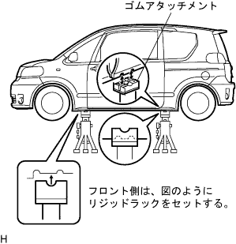

Supporting position of work knowledge and precautions jacks, rigid racks and lift |
In principle, vehicles do not jack up and lift up with heavy objects loaded with heavy objects.
The center of gravity of the vehicle moves when heavy objects such as the engine and mission are removed.Therefore, it is installed so that the balance weight does not roll, or the jack support position is maintained in the mission jack.
Perform safety work according to the lift handling book.
Do not damage the tires and wheels with a free wheel beam.
Use a wheel to fix the vehicle.
Be sure to use a wheel stop in a flat place.
|  |
The rigid lack uses a rubber attachment as shown in the figure.
The jack and rigid lack definitely support the specified position.
When jacking up the front wheels, release the parking brake and stop only on the back of the rear wheel.When jacking up the rear wheels, only the front wheels are stopped.
If you only support the vehicle with a jack, you will not be able to work or leave it, but always support it with a rigid lack.
If only the front or rear wheels are jacked up, stop the front and back of the ground wheels.
When jacked down from the jacked state only on the front wheels, release the parking brake and stop only on the front side of the rear wheel.When jacked down from the jacked state only on the rear wheel, stop the wheel only on the back of the front wheel.
The rear jacking up of the FF car is performed with the body roller back panel.
Perform safety work according to the lift handling book.
The receiving stand is used with a rubber attachment as shown in the figure.
The vehicle rides as if the center of the lift and the center of gravity of the vehicle are as close as possible (L).
Adjust the height of the receiver so that the vehicle posture is horizontal, and ensure the groove of the receiver and the rigid rack support position.
The swing arm always locks and works.
Lift up until the tire floats a little, shake the vehicle, and confirm that the vehicle is stable.
Perform safety work according to the lift handling book.
Use a plate lift attachment.
When lifting a vehicle with a plate lift, make sure that the vehicle center of gravity is within the permissible range of the vehicle center of the vehicle.
Be sure to get into the specified position.
| Vehicle left -right direction set position |
|
| Vehicle front and rear direction set position |
|
Lift up until the tire floats a little, shake the vehicle, and confirm that the vehicle is stable.
Make sure that the body and the lift other than the jack -up point do not hit when the lift is up.